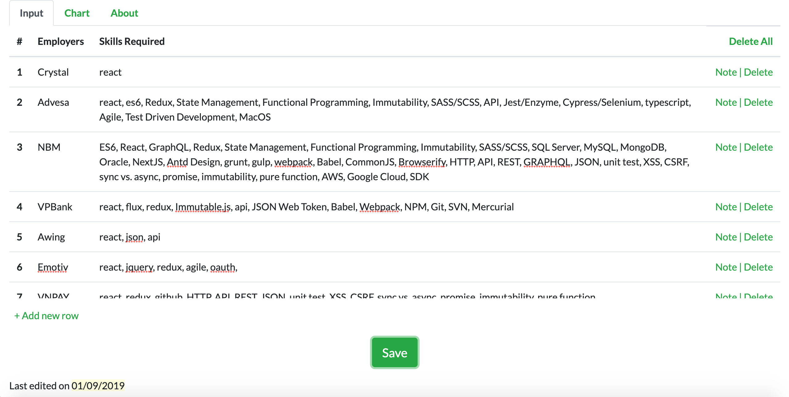
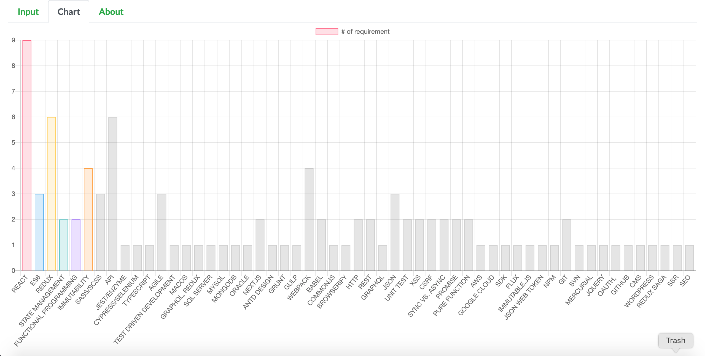

| # | Employers | Skills Required | Delete All |
|---|
Để có thể kiếm được một công việc lập trình tốt, cần phải có sự chuẩn bị tốt về các kĩ năng (skills) mà nhà tuyển dụng (employers) yêu cầu.
Giả dụ, mẩu tin tuyển dụng (JD - Job Description) của công ty ABC yêu cầu HTML5, CSS3, Javascript, ES6, ReactJS, Git, CSS preprocessor, HTTP, API, REST, GRAPHQL, JSON, unit test, XSS, CSRF, sync vs. async, promise, immutability, pure function. Bạn là người còn đang trong quá trình học, có cả tá skills trong JD mà thậm chí bạn chưa từng thấy bao giờ. Tuy nhiên, nó vẫn được lặp lại trong rất nhiều JD của các công ty khác. Những skills được nhiều JD lặp lại chính là những skills bạn cần tập trung vào và rèn luyện nhuần nhuyễn để tăng xác suất kiếm được việc tốt.
Do đó, khi bạn lên một trang tìm kiếm việc làm và search, kết quả trả về là một list các JD phù hợp. Bạn phát sinh nhu cầu muốn thống kê xem những skills nào được nhiều JD lặp lại nhất. Hay nói cách khác, những skills nào được nhiều công ty yêu cầu nhất.
JD Analysis for Devs ra đời.
Bạn nhập input.
Và JD Analysis for Devs cho bạn kết quả của thống kê dưới dạng đồ thị (chart).
Dù khá đơn giản nhưng JD Analysis for Devs yêu cầu người dùng nhập đúng cú pháp sau cho trường "Skills Required":
Chỉ cần đảm bảo điều trên, mọi khoảng trống (whitespace) sẽ đều được xử lý. Nếu cú pháp về dấu phẩy trên không được đảm bảo, đồ thị có thể cho bạn một kết quả không chính xác.
Cuối cùng, hệ thống sẽ tự động KHÔNG tính những skills bị lặp lại trong cùng một JD.
JD Analysis for Devs sử dụng localStorage để lưu trữ dữ liệu trên trình duyệt. Dù chương trình là responsive, tác giả vẫn khuyến khích nên sử dụng trên một PC cố định.
Author: Lương Minh Đức
Version: 1.0.0
Copyright 2019
Mọi góp ý về JD Analysis for Devs xin gửi về: luongminhduc94@gmail.com
Nếu bạn thấy JD Analysis for Devs giúp ích cho mình, bạn có thể ủng hộ tác giả thông qua Ví điện tử Momo 0798700844.
Have fun and wish you secure a good job!